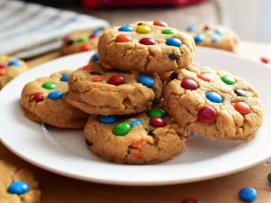

Odin Recipes

List of Ingredients
- 1 cup creamy peanut butter
- ¾ cup firmly packed brown sugar
- 2 tablespoons firmly packed brown sugar
- 1 large egg, at room temperature
- 1 teaspoon baking soda
- 1 ½ teaspoons vanilla extract
- ¼ teaspoon salt
- ⅛ teaspoon ground nutmeg
- ½ cup mini candy-coated chocolate pieces (such as mini M&M's®)
Directions
- Preheat the oven to 350 degrees F (175 degrees C). Line two baking sheets with parchment paper.
- Mix together peanut butter, 3/4 cup plus 2 tablespoons brown sugar, egg, baking soda, vanilla, salt, and nutmeg until combined. Mix in mini chocolate M&Ms.
- Scoop out 1 1/2 tablespoon sized balls of dough and place 1 inch apart on the baking sheets. Flatten dough balls to about 1/2 inch thickness.
- Bake in the preheated oven until tops of cookies begin to slightly crack, about 10 minutes. Allow cookies to cool 10 minutes on baking sheets before removing to a wire rack to cool completely.
Four simnple step and you have a batch of fantastic Cookie. Yum!